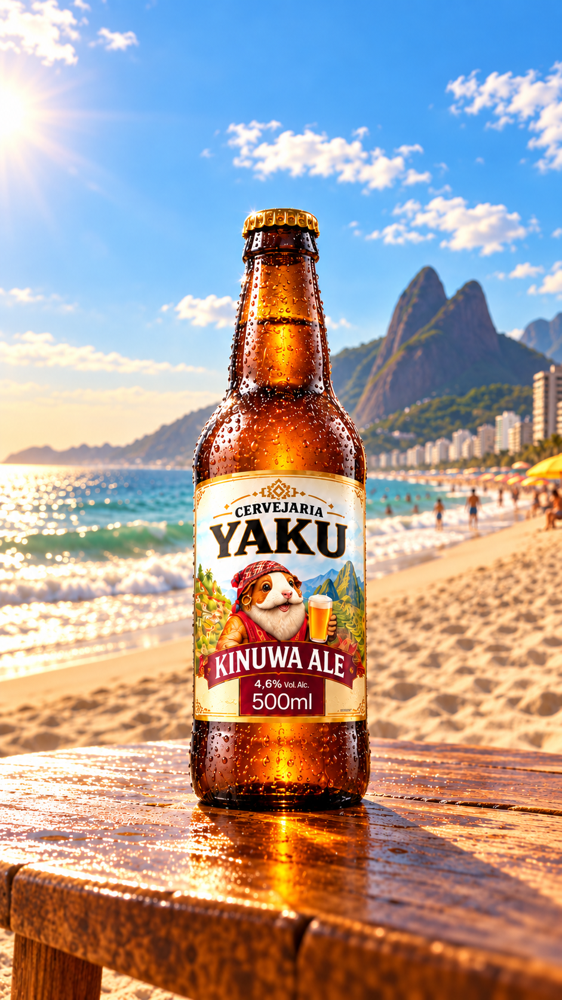
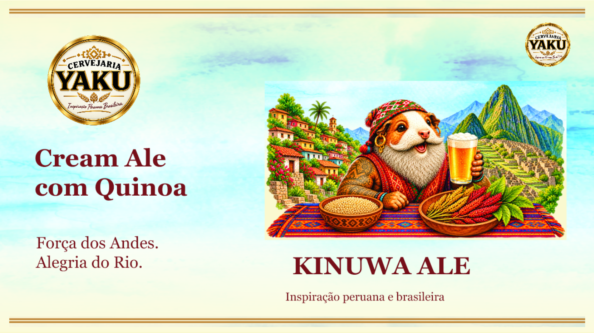

INSPIRAÇÃO PERUANA E BRASILEIRA
Duas culturas.
Uma identidade.
Um olhar sobre o universo visual da Yaku: referências dos Andes, paisagens do Rio e a história contada por um rótulo.
Explore a identidade ↓Arte, território
e referências culturais.

ENCONTRO
DE CULTURAS
01 — A IDENTIDADE
Entre os Andes
e o Atlântico.
A apresentação da Yaku aproxima referências peruanas e brasileiras em uma mesma linguagem visual.
Montanhas, tecidos coloridos e quinoa aparecem ao lado de paisagens do Rio de Janeiro. Esses elementos compõem o universo gráfico da marca e de sua Kinuwa Ale.

02 — O RÓTULO
Kinuwa
Ale.
Conheça as informações presentes no material de apresentação da marca.
- Estilo
- Cream Ale
- Ingrediente em destaque
- Quinoa
- Teor alcoólico no rótulo
- 4,6% vol.
- Volume apresentado
- 500 ml
03 — ARQUIVO VISUAL
O universo Yaku.
Selecione uma imagem
para explorar os detalhes.
04 — DETALHES DA IDENTIDADE
Uma linguagem
em camadas.
01 A paleta +
Creme, vinho e dourado organizam esta apresentação digital, em diálogo com os tons dos materiais originais.
02 As referências +
As imagens fornecidas reúnem montanhas andinas, quinoa, tecidos e paisagens de praia. Explore esses elementos no arquivo visual.
03 O formato +
A identidade aparece em um rótulo de garrafa e em composições digitais. A galeria permite ampliar cada material.
YAKU